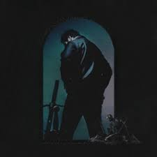
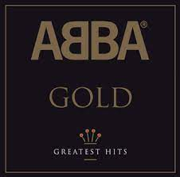

- Lover, Taylor Swift
- I love Taylor
- More of a return to her roots (album that followed Reputation)
- Came out going into my senior year of highschool, which is a great time to be alive.
- Hollywoods Bleeding, Post Malone
- Posty's close to his opening trilogy
- Circles is a good song for whatever mood you're in.
- Mentions "Utah snow" on Wow. I love Utah.
- ABBA GOLD: Greatest hits, ABBA
- I know this isn't technically an album, but I was yet to be born in ABBA's prime.
- Made a literal movie about their music (Mama Mia). Also a remake.
- I am a dude but I am still the dancing queen.
- My Everything, Ariana Grande
- Ariana Grande was my eighth grade love.
- Debut album leaving Nickelodeon's Victorious.
- Love Me Harder is my favorite guy girl duet that has been released in the last ten years.
- Released on the fourth of July, my favorite day of the year.
- Made In The A.M., One Direction
- The final One Direction album before the split.
- Even without ZAYN, they did great.
- A step away from the generic pop that they had previously released. Deeper songs with better lyrics.


